Cat Calorie Calculator
Find your cat's approximate daily calories. Resting energy requirement (RER) is 70 × (weight in kg)0.75, multiplied by a factor for life stage.
Feeding Amount Calculator
Turn daily calories into grams of food per day, using the energy printed on the food pack.
Ideal Weight Checker
Compare your cat's weight with the typical range for its frame size. This is a rough guide, not a diagnosis.
Toxic Food Checker
Type a food to check it against our list of foods that are toxic or unsafe for cats.
Life-Stage Feeding Guide
Pick a life stage to see the feeding approach that usually suits it.
Our practical feeding guides, written for everyday cat owners.

Kitten Feeding: A Practical Guide for the First YearHow to feed a kitten in the first year: how often, how much, when to wean and when to switch to adult food.
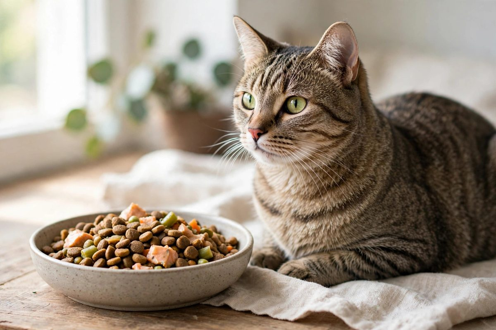
Adult Cat Diet: Feeding a Healthy Cat from 1 to 7 YearsA practical adult cat diet: calories, protein, meal frequency, wet vs dry food and how many treats are too many.
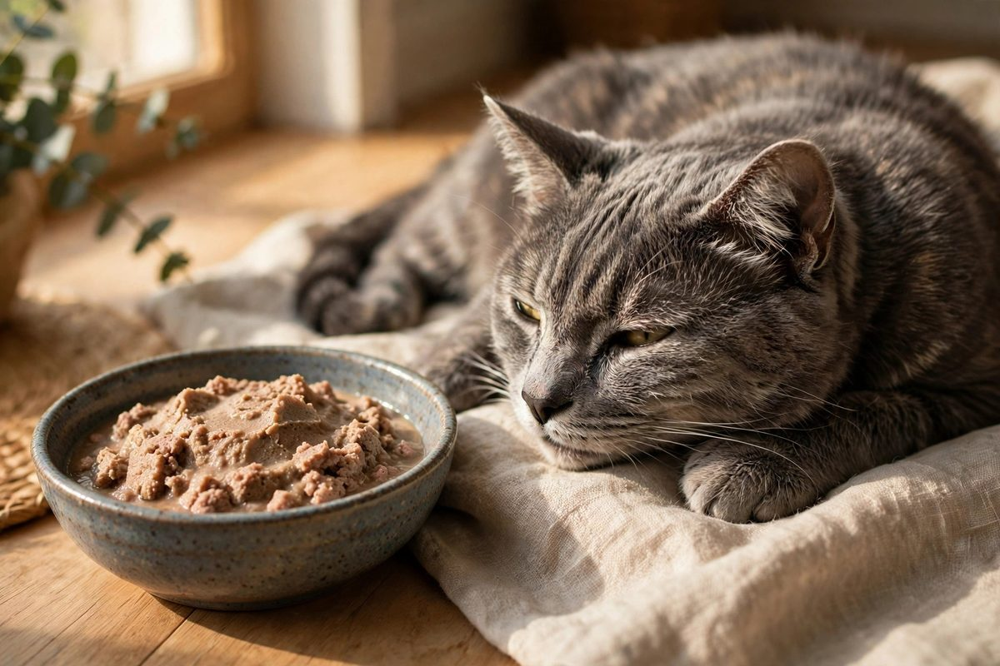
Senior Cat Nutrition: Feeding Cats Aged 7 and OlderHow to feed a senior cat: protein quality, hydration, kidney support, weight changes and when to ask the vet.

Wet vs Dry Cat Food: Which Is Better?Wet vs dry cat food compared honestly: hydration, teeth, cost, convenience and how to mix them well.
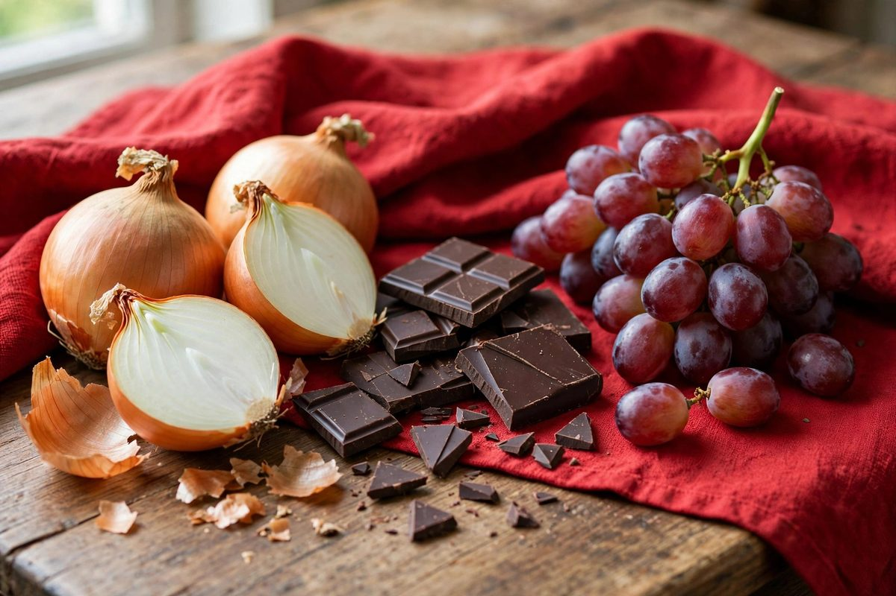
Toxic Foods for Cats: What Never to Feed and What to DoThe foods that are toxic to cats, including onion, garlic, grapes, chocolate and lilies, plus what to do if your cat eats one.

Cat Weight Management: Helping an Overweight Cat Slim Down SafelyA safe plan for cat weight loss: measuring food, play, slow progress and when to involve the vet.

Cat Treats Guide: How Many Is Too Many?How to choose and portion cat treats: the 10 percent rule, healthy options, and treats to avoid.

Raw Diet for Cats: Benefits, Risks and How to Do It SafelyRaw feeding for cats explained honestly: what supporters claim, what vets warn about, and how to reduce the risks.

Homemade Cat Food: How to Cook for Your Cat SafelyCooking for your cat at home: the nutrients that must be included, safe recipes, and the mistakes that cause deficiencies.
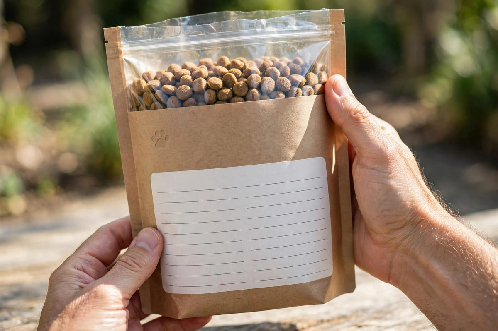
Cat Food Labels Explained: How to Read a Cat Food PacketHow to read a cat food label: ingredients, guaranteed analysis, feeding guides and the marketing words to ignore.
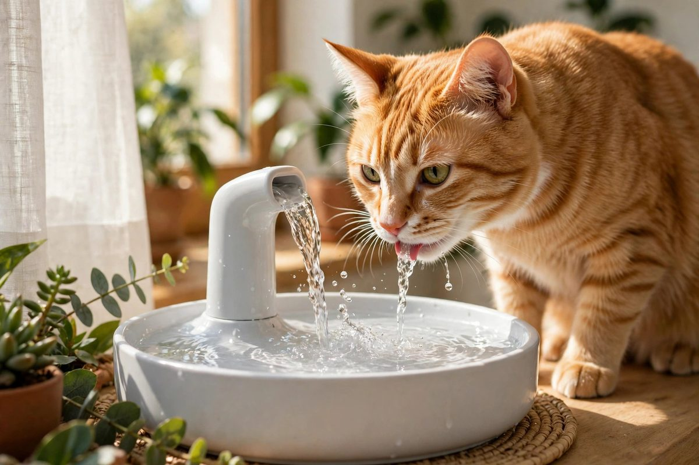
Hydration for Cats: How to Get Your Cat Drinking More WaterWhy cats under-drink, how much water they need, and practical tricks: fountains, wet food, bowl placement and more.

Cat Dental Health and Diet: Keeping Your Cat's Teeth CleanHow diet affects cat teeth: what helps, what does not, brushing, dental diets and the signs of dental disease.
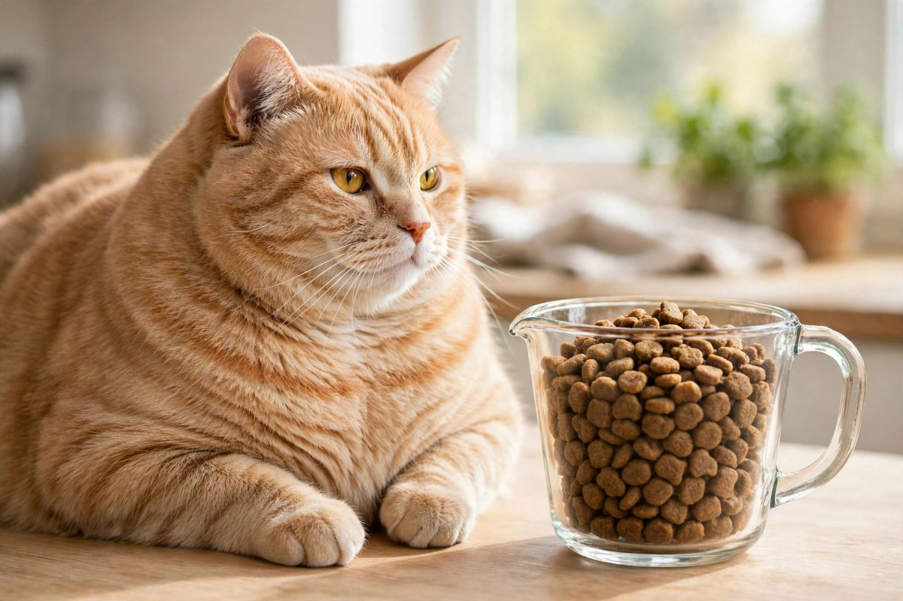
Overweight Cats: Why Cats Gain Weight and What to DoWhy cats become overweight, the health risks of extra weight, and a safe plan to help a cat slim down.
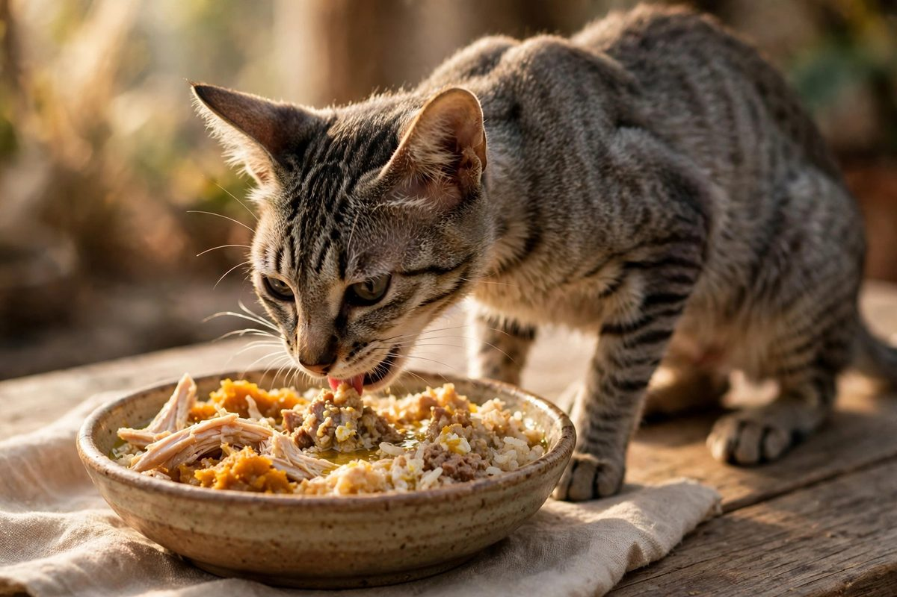
Underweight Cats: When a Cat Is Too Thin and How to HelpWhy cats lose weight, the health causes to check first, and how to help a thin cat gain weight safely.
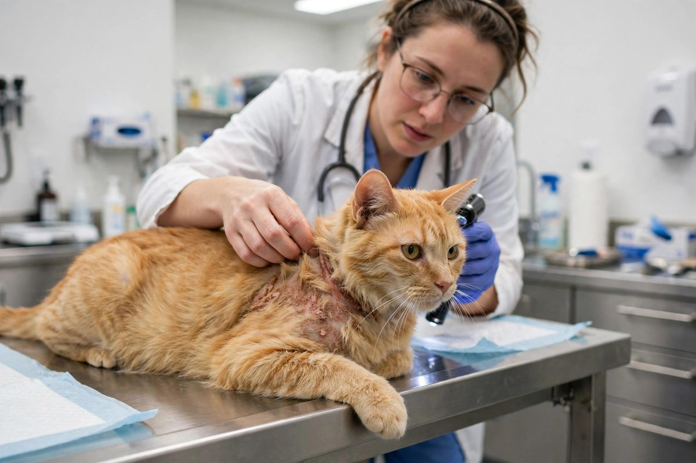
Cat Food Allergies: Signs, Causes and Elimination DietsHow to recognise a cat food allergy, the difference from intolerance, and how an elimination diet works.

Feeding Multiple Cats: How to Feed Two or More Cats FairlyFeeding several cats in one home: separate bowls, microchip feeders, different diets, and stopping food theft.
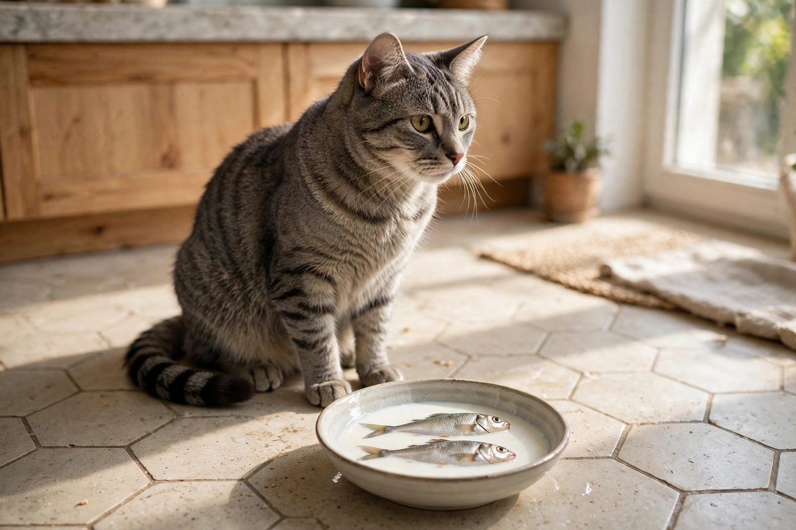
Cat Nutrition Myths: 7 Myths That Could Harm Your CatSeven common cat nutrition myths debunked: milk, fish-only diets, dry food and teeth, garlic, and more.

Best Cat Food Brands Guide: How to Choose a Good BrandHow to judge a cat food brand without the marketing: manufacturing, research, transparency and value.
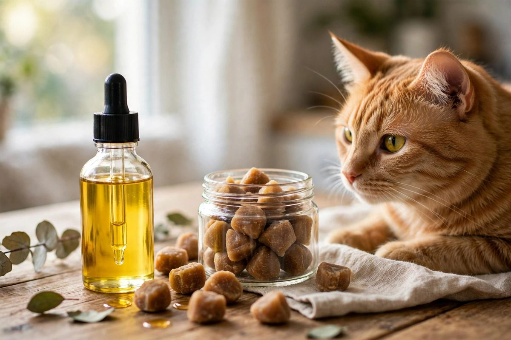
Cat Supplements: Do Cats Need Them, and Which Are Safe?Cat supplements explained: omega-3, probiotics, joint support and vitamins, when they help and when they are a waste of money.
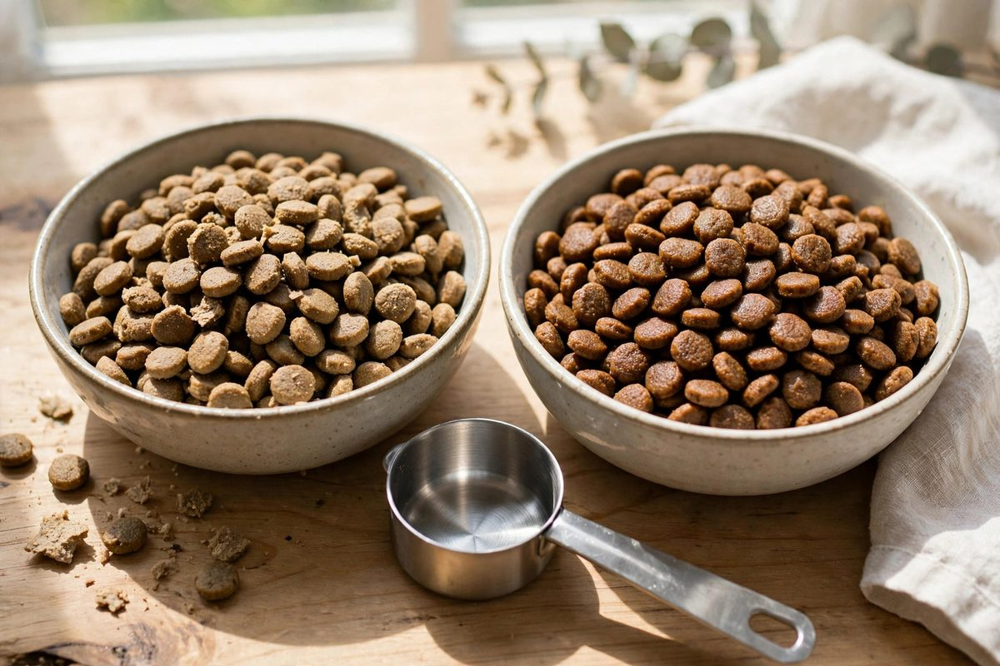
Transitioning Cat Food: How to Switch Foods Without an Upset StomachHow to change your cat's food safely: a 7 to 10 day plan, handling fussy cats, and when to stop and try again.